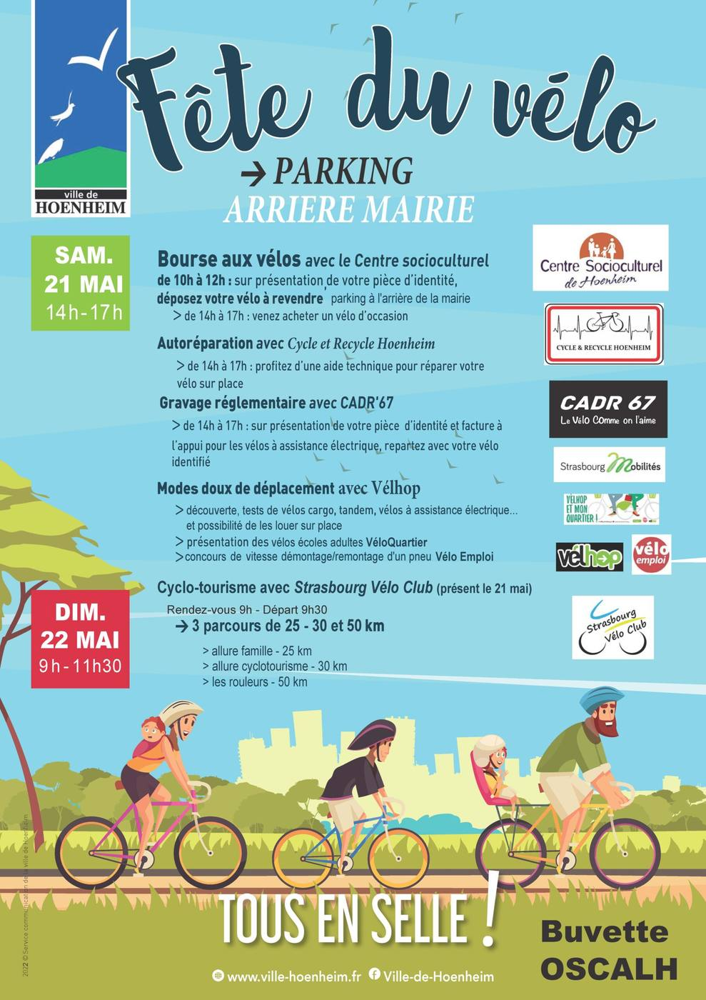

- Cet événement est terminé
Fête du vélo à Hoenheim !
21 mai 2022 à 14 h 00 min - 22 mai 2022 à 11 h 30 min
Navigation de l'événement

Le samedi 21 mai et le dimanche 22 mai 2022 : tous en selle pour la fête du vélo !
Venez nombreux sur le parking à l’arrière de la mairie et participez aux diverses animations proposées (bourse aux vélos, autoréparation de cycles, gravage réglementaire, ballades à vélo).